COEFFS_COMPOSITION
Contents
function [Hk] = coeffs_composition(W_0,H,multi_input)
Composition coefficients for power series
Calculates the composition coefficients of power series as given in https://doi.org/10.1016/j.jsv.2020.115640 , Appendix C
switch multi_input.ordering case 'conjugate' %Coefficients in conjugate ordering, used in cohomological solution %for computing autonomous coefficients Hk = conjugate_computation(W_0,H,multi_input); case 'revlex' %Restoring coefficients for nonautonomous calculations given the %calculated SSM coefficients. Hk = rev_lexicographic_computation(W_0,H,multi_input.k); case 'lex' Hk = lexicographic_computation(W_0,H,multi_input.k); end
end function [Hk] = conjugate_computation(W_0,H,multi_input)
Algorithm for unique multi-indices up to conjugation
This function computes the coefficients for the composition of a multivariate polynomial power series.
Take the expansion of row  of a vector valued function 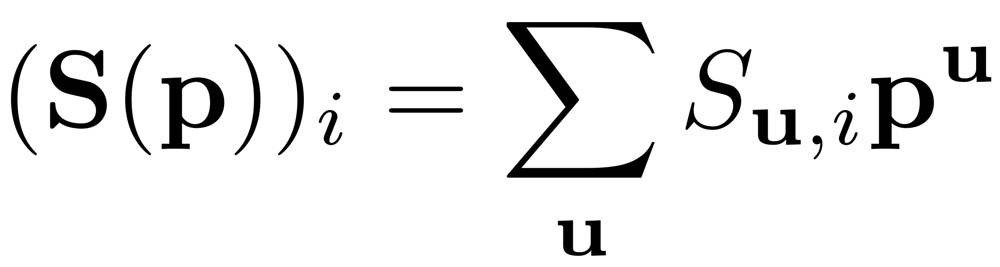 .
of a vector valued function 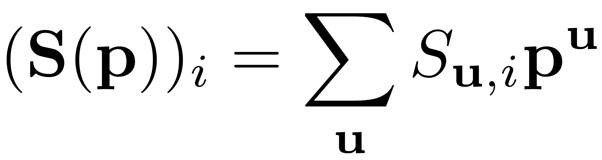 .
If this power series is multiplied with itself 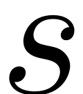 times, it can be written like 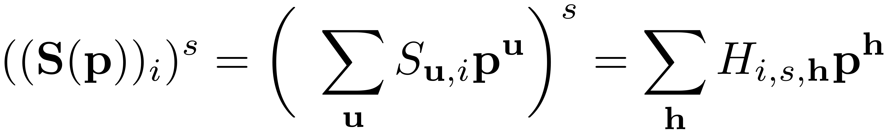
This function computes 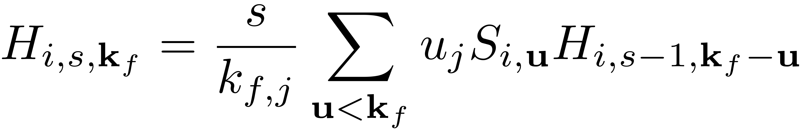 for all multi-index vectors 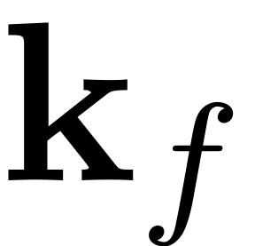 of a given order 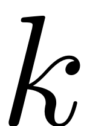.
Z_cci = multi_input.Z_cci; N = multi_input.N; K = multi_input.K; revlex2conj = multi_input.revlex2conj; l = size(K,1); k = sum(K(:,1),1); string = 'conjugate'; z_k = Z_cci(k); Hk = zeros(N,z_k,k); [kj,Ikj] = min(K +(k+1)*(K ==0)); %find nonzero minima of all multi-indices of order k
Loop over all orders of multi-indices that are potentially nonzero and do not require the knowledge of the order coefficients of the SSM parametrisation.
for ord = 1:k-1
Create all multi-indices of order 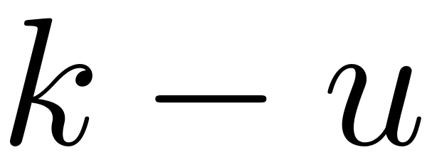
g = flip(sortrows(nsumk(l,k-ord,'nonnegative')).',2); g = g(:,revlex2conj{k-ord}); [gmink,I_k,I_g] = multi_subtraction(K,g,'Parametrised');
Now all the positions of the order  multi-indices are calculated. Assume the vector has 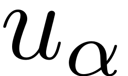 columns.
multi-indices are calculated. Assume the vector has 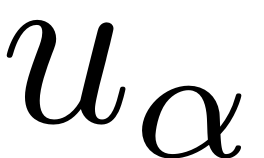 columns.
I_gmk = multi_index_2_ordering(gmink,string,revlex2conj);
We read out all the values 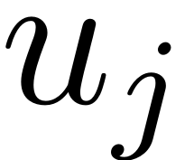 positions of minimal entries
pos = Ikj(I_k); %find row for every vector in mv sz = size(I_k,2); poslin = sub2ind([l,sz],pos,1:sz); %create linear index array % read out minimal entries gmk_j = gmink(poslin); %has to be a row vector
One thing that is redundant is all the calculations where is zero. The corresponding values could be ignored, by taking the indices corresponding to = 0 out of calculations .
Consequently, the coefficients 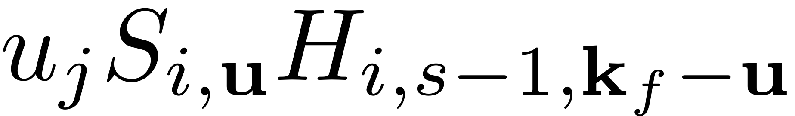 are calculated. In the array Hk the first row corresponds to the phase space dimension, the third one to the scalar exponents.
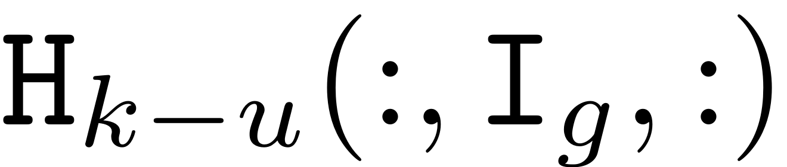 is a matrix in 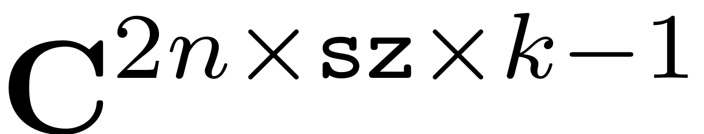. Contribution of coefficients where 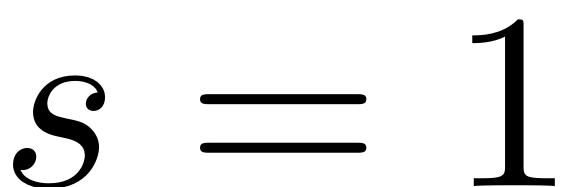 explicitly depend on the SSM coefficients of the order that is calculated and will be added in the end after the highest order coefficients of the SSM parametrisation have been computed,but fortunately are not needed for the calculations of themselves. Finally 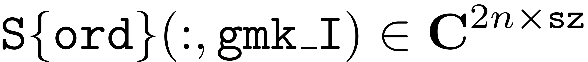.
Now, since we want to make use of the symmetry in the SSM coefficients, we split all contributions such that in conjugate multi-index ordering, all of the indices at order  that are smaller or equal than 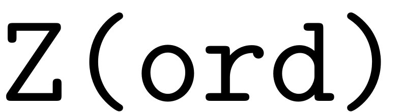 are read out normally, and the ones that are bigger are changed to their conjugate counterpart.
that are smaller or equal than 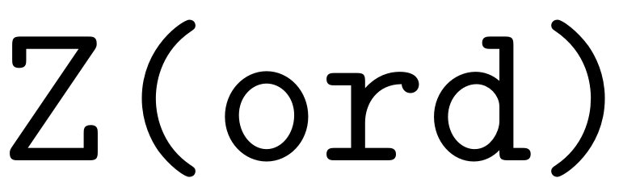 are read out normally, and the ones that are bigger are changed to their conjugate counterpart.
coeff = zeros(N,sz,k-ord);
z_o = nchoosek(ord+l-1,l-1);
z_ko = nchoosek(k-ord+l-1,l-1);
z_cci_o = Z_cci(ord);
z_cci_ko = Z_cci(k-ord);
% determine which coefficients correspond to multi-indices bigger
% than the conjugate center index at order o and k-o.
I_g_a = I_g <= z_cci_ko;
I_gmk_a = I_gmk <= z_cci_o;
% where g_I <= z_ko_2, and gmk_I <= z_k_2
aa = I_g_a & I_gmk_a;
% where g_I > z_ko_2, but gmk_I <= z_k_2
ab = ~I_g_a & I_gmk_a;
% where g_I <= z_ko_2, but gmk_I > z_k_2
ba = I_g_a & ~I_gmk_a;
% where g_I > z_ko_2, and gmk_I > z_k_2
bb = ~ I_g_a & ~I_gmk_a;
%read out contributions using symmetries
W0_coeffs = W_0(ord).coeffs;
coeff(:,aa,:) = W0_coeffs(:,I_gmk(aa)).* gmk_j(aa) .* H{k-ord}(:,I_g(aa),:);
coeff(:,ab,:) = W0_coeffs(:,I_gmk(ab)).* gmk_j(ab) .* conj(H{k-ord}(:,z_ko-I_g(ab)+1,:));
coeff(:,ba,:) = conj(W0_coeffs(:,z_o-I_gmk(ba)+1)).* gmk_j(ba) .* H{k-ord}(:,I_g(ba),:);
coeff(:,bb,:) = conj(W0_coeffs(:,z_o-I_gmk(bb)+1)).* gmk_j(bb) .* conj(H{k-ord}(:,z_ko-I_g(bb)+1,:));
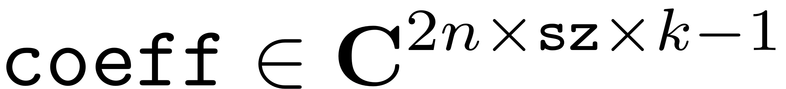. What is left now is to add up all the parts corresponding to a specific multi-index of order and multiply with the the slice corresponds to. We want to add all the columns corresponding to where 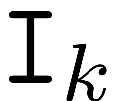 has the same values (the columns contain coefficients that contribute to the same order multi-index).
for f = unique(I_k) Hk(:,f,2:(k-ord+1)) = Hk(:,f,2:(k-ord+1)) + sum(coeff(:,I_k==f,:),2); end
end %multiplication with s and kj s = 1:k; %match dimensions for pointiwse multiplication Hk = permute(Hk,[2,3,1]) .* ((1./kj).' * s); Hk = permute(Hk,[3,1,2]);
end function [Hk] = lexicographic_computation(W_0,H,k)
l = size(H{1},2);
z_k = nchoosek(k+l-1,l-1);
N = size(H{1},1);
K = sortrows(nsumk(l,k,'nonnegative')).';
string = 'lex';
Hk = zeros(N,z_k,k);
%find nonzero minima of all multi-indices of order k
[kj,Ikj] = min(K +(k+1)*(K ==0));
Loop over all orders of multi-indices that are potentially nonzero and do not require the knowledge of the order coefficients of the SSM parametrisation.
for ord = 1:k-1
if isempty(W_0{ord}.coeffs) continue end
Create all multi-indices of order
if l >1 g = sortrows(nsumk(l,k-ord,'nonnegative')).'; %lexicographic!! else g = k-ord; end [gmink,I_k,I_g] = multi_subtraction(K,g,'Parametrised');
Now all the positions of the order multi-indices are calculated. Assume the vector has columns.
I_gmk = multi_index_2_ordering(gmink,string,[]);
We read out all the values positions of minimal entries
pos = Ikj(I_k); %find row for every vector in mv sz = size(I_k,2); poslin = sub2ind([l,sz],pos,1:sz); %create linear index array % read out minimal entries gmk_j = gmink(poslin); %has to be a row vector
One thing that is redundant is all the calculations where is zero. The corresponding values could be ignored, by taking the indices corresponding to = 0 out of calculations .
Consequently, the coefficients 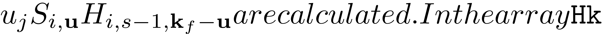 the first row corresponds to the phase space dimension, the third one to the scalar exponents.
is a matrix in . Contribution of coefficients where explicitly depend on the SSM coefficients of the order that is calculated and will be added in the end after the highest order coefficients of the SSM parametrisation have been computed,but fortunately are not needed for the calculations of themselves. Finally .
%read out contributions
coeff = W_0(ord).coeffs(:,I_gmk).* gmk_j .* H{k-ord}(:,I_g,:);
. What is left now is to add up all the parts corresponding to a specific multi-index of order and multiply with the the slice corresponds to. We want to add all the columns corresponding to where has the same values (the columns contain coefficients that contribute to the same order multi-index).
for f = unique(I_k) Hk(:,f,2:(k-ord+1)) = Hk(:,f,2:(k-ord+1)) + sum(coeff(:,I_k==f,:),2); end
end %multiplication with s and kj s = 1:k; %match dimensions for pointiwse multiplication Hk = permute(Hk,[2,3,1]) .* ((1./kj).' * s); Hk = permute(Hk,[3,1,2]); % Since we reconstruct we already know the SSM coefficients at that order if ~isempty(W_0{k}) && ~isempty(W_0{k}.coeffs) Hk(:,:,1) = W_0(k).coeffs; end
end function [Hk] = rev_lexicographic_computation(W_0,H,k)
General Algorithm
l = size(H{1},2);
z_k = nchoosek(k+l-1,l-1);
N = size(H{1},1);
K = flip(sortrows(nsumk(l,k,'nonnegative')).',2);
string = 'revlex';
Hk = zeros(N,z_k,k);
%find nonzero minima of all multi-indices of order k
[kj,Ikj] = min(K +(k+1)*(K ==0));
Loop over all orders of multi-indices that are potentially nonzero and do not require the knowledge of the order coefficients of the SSM parametrisation.
for ord = 1:k-1
if isempty(W_0(ord).coeffs) continue end
Create all multi-indices of order
if l > 1 g = flip(sortrows(nsumk(l,k-ord,'nonnegative')).',2); %rev-lexicographic!! else g = k-ord; end [gmink,I_k,I_g] = multi_subtraction(K,g,'Parametrised');
Now all the positions of the order multi-indices are calculated. Assume the vector has columns.
I_gmk = multi_index_2_ordering(gmink,string,[]);
We read out all the values positions of minimal entries
pos = Ikj(I_k); %find row for every vector in mv sz = size(I_k,2); poslin = sub2ind([l,sz],pos,1:sz); %create linear index array % read out minimal entries gmk_j = gmink(poslin); %has to be a row vector
One thing that is redundant is all the calculations where is zero. The corresponding values could be ignored, by taking the indices corresponding to = 0 out of calculations .
Consequently, the coefficients the first row corresponds to the phase space dimension, the third one to the scalar exponents.
is a matrix in . Contribution of coefficients where explicitly depend on the SSM coefficients of the order that is calculated and will be added in the end after the highest order coefficients of the SSM parametrisation have been computed,but fortunately are not needed for the calculations of themselves. Finally .
%read out contributions
coeff = W_0(ord).coeffs(:,I_gmk).* gmk_j .* H{k-ord}(:,I_g,:);
. What is left now is to add up all the parts corresponding to a specific multi-index of order and multiply with the the slice corresponds to. We want to add all the columns corresponding to where has the same values (the columns contain coefficients that contribute to the same order multi-index).
for f = unique(I_k) Hk(:,f,2:(k-ord+1)) = Hk(:,f,2:(k-ord+1)) + sum(coeff(:,I_k==f,:),2); end
end %multiplication with s and kj s = 1:k; %match dimensions for pointiwse multiplication Hk = permute(Hk,[2,3,1]) .* ((1./kj).' * s); Hk = permute(Hk,[3,1,2]); % Since we reconstruct we already know the SSM coefficients at that order if ~isempty(W_0(k)) && ~isempty(W_0(k).coeffs) Hk(:,:,1) = W_0(k).coeffs; end
end